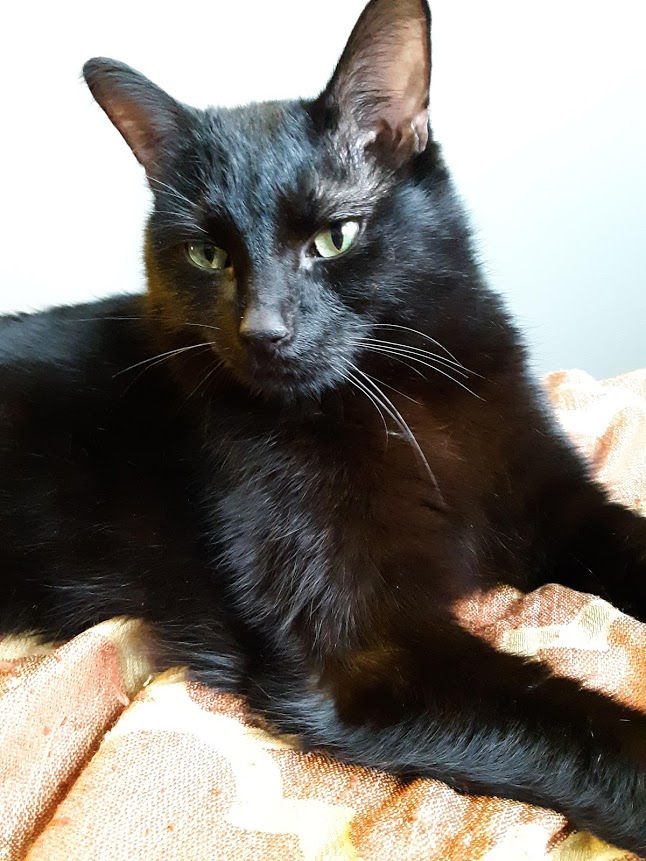
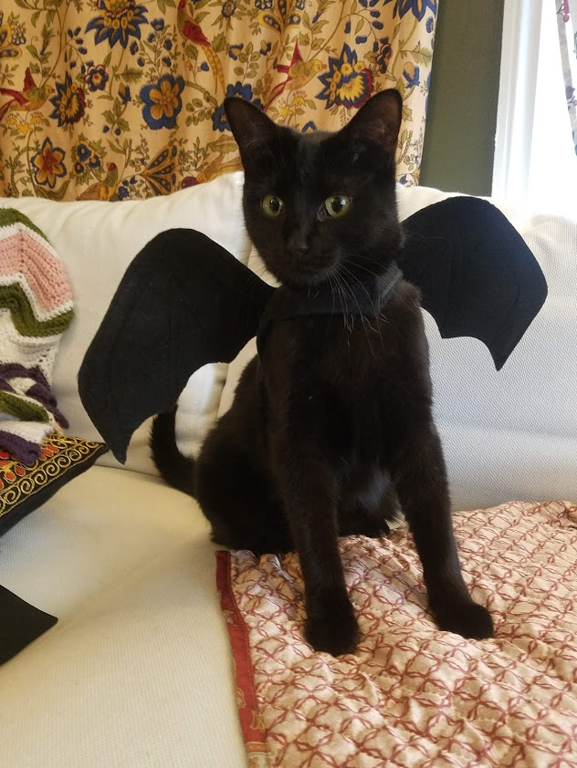

I have two cats named Jasper and Frankie! I got them from the human society
on Adopt a Black Cat day. They're brother and sister, but they have very different
personalities.
Jasper

This is Jasper. He looks like a grumper, but he's really only grumpy
about 30% of the time. He loves:
Being outside
Screaming about not being able to go outside
Being cuddly between the hours of 7-9AM and 9-11PM daily
Aggressively grooming his sister
Frankie

This is Frankie dressed as a bat for Halloween. I know, she's disgustingly cute.
Frankie loves 3 things most of all:
Cuddling. All day every day all the time why aren't you
cuddling her right now?
Eating. Or maybe what she actually loves is the anticipation while
the can of food is being opened.
Yelling at whoever is around for either not cuddling or not
feeding her, depending on her inclination.